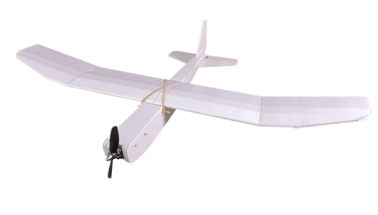

I chose the FT Mighty Mini Tiny Trainer because of it's easy build, reliability, and ease of flight. While the FT Guinea Pig completely met the needs, having a drop mechanism, it is a much harder plane to build and is harder to fly. As an inexperienced pilot, it would likely pose a challenge.
On this plane, I don't plan on attaching a physical component, but will rather test the idea of putting a raspberry pi on a plane.
